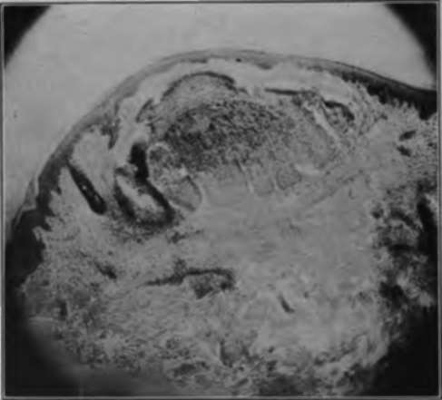

Chapter III. Epithelial Wakts
Description
This section is from the book "Skin Cancer", by Henry H. Hazen, A.B., M.D.. Also available from Amazon: Skin Cancer.
Chapter III. Epithelial Wakts
There are, of course, two varieties of epithelial warts-the benign and the malignant.
Benign Warts
Both clinically and pathologically the benign warts may be divided into four main classes, each of which contains subdivisions.
A. Keratomata.
a. Simple keratoma.
b. Clavus.
c. Callus.
d. Cutaneous horn.
e. Angiokeratoma.
B. Acanthoma (spino-celled tumor).
a. Molluscum contagiosum.
C. Mixed-celled tumors (reteomata).
a. Verruca vulgaris.
b. Verruca digitata.
c. Verruca filiforniis.
d. Condyloma acuminata.
e. Semiglobular wart.
f. Pedunculated fibroreteoma.
g. Seborrheic warts.
h. Acanthosis nigricans.
D. Basal-celled warts.
a. Nevus-like warts.
b. Multiple benign cystic epithelioma.
In addition to the true wart-like growths, certain infectious diseases of the skin frequently assume a papillomatous overgrowth, consisting of hypertrophied epithelium. Among these may be mentioned lupus vulgaris, and various other forms of tuberculosis of the skin, frambesiform syphilis, blastomycosis, yaws, and occasionally eczema.
The different growths mentioned above form a veritable hodgepodge, a set of tumors very different in their clinical manifestations as well as in their etiology. They are here grouped together simply because they all form a more or less wart-like projection above the level of the skin and all show epithelial proliferation.
Keratomata
Of the true keratomata there are several varieties, all sufficiently well described in the text-books on dermatology*.
By simple keratoma the author has reference to the single or multiple keratosis already described on page 39, and here referred to simply for the sake of completeness.
Clavus or corn is too well known to need any detailed clinical description. Pathologically, it is a true keratoma of wedge-like shape, with the apex pointing downward.
The simple callosity is likewise too well known to merit comment; it is a diffuse keratoma, due to a combination of pressure and friction.
The cutaneous horn has only an outward resemblance to the horns of animals, but has not their hardness, being about equal in consistency to the normal nail. The length varies from 5 mm. to 10 or 15 cm. They may grow singly or in groups; in the latter case there is usually one large one surrounded by smaller ones. The point of origin is often a keratosis, or a fibroma, but usually a seborrheic patch. They grow out from and are attached by the horny layer that reaches down between the greatly elongated papillae.
Angiokeratoma were first described by Mibelli.2 They appear on the hands or feet of young persons on a basis of local asphyxia, and consist of capillary ectases, with a surmounting keratoma. They first appear as red spots that disappear under pressure, next as permanent capillary dilatation, and finally the keratoma develops.
Acanthoma (Prickle-Celled Tumors)
The molluscum contagiosum is the only true tumor consisting almost entirely of prickle cells. Clinically, they are sharply-defined, single, semiglobular tumors, of a translucent appearance, and showing a central depression. They vary in size from 2 to 6 mm., and usually appear upon the faces of children, and the genitalia of adults. They are undoubtedly spread by autoinoculation and contagion, and they frequently appear in small epidemics, either in schools or among the patrons of the so-called Turkish baths. Upon firm pressure a colloid-like material may be expressed from these growths. Histologically, there is a marked amount of acanthoid tissue that has undergone colloid degeneration (Fig. 9).
*Crocker: Diseases of the Skin, 3d ed., Phila., 1905.
Hyde: Diseases of the Skin, 8th ed., Phila., 1909.
Pusey: Principles and Practice of Dermatology, New York, 1907.
Stelwagon: Diseases of the Skin, 6th ed., Phila., 1910. 8 Mibelli: Inter. Atlas Rare Skin Dis., vii, 1889.
Mixed-Celled Tumors (Reteomata)
Verruca vulgaris is the common wart so often found upon the hands and scalp of the young. At times it occurs upon the soles of the feet, then causing a very painful affliction. That the common wart is infectious is proven by the experiments of Jadassohn* and others, all well described in Stelwagon. It is so well known that no description is necessary; suffice it to say that the so-called seeds arc simply particles of dirt that have gotten down between the elongated intrapapillary spaces.
Fig. 9.-Histologically, the lesions of molluscum contaglosum consist of a pure growth of spinous cells, which have undergone degeneration. (Author's collection).
Histologically, the papillae are elongated, and the prickle, basal and horny layers all hypertrophied.
The digitate wart, or verruca digitata, is simply a subvariety of the preceding, the projections being very long, and are most commonly found upon the scalp.
The so-called filiform warts are most common upon the neck, often appearing in great numbers at the same time; fifty or even a hundred may develop within a week. They usually arise from the neighborhood of the hair follicles, and are undoubtedly infectious, for, if only one be left behind, many more will usually appear. Histologically, there is proliferation of all the layers of the epithelium arranged around an increased amount of fibrous tissue.
*Jadassohn: Verhandl. d. Bten Deutsch. Dermat. Gesselsch., 1895-96, 497.
The acuminate condylomata, or venereal warts, occur around the glans penis of men and the labia of women, and are directly due to irritating discharges, especially of gonorrhea or chancroid, much more rarely of syphilis. A typical growth resembles a cock's comb, is bright red in color, and has numerous sharp projections. Histologically, there is hypertrophy of the prickle and basal layers of the rete, and to some extent of the fibrous tissue.
The semiglobular warts are very common upon the faces of women, and to a somewhat less extent of men, and occasionally occur elsewhere, rarely upon the mucous membranes. Their diameter varies from 2 to 10 or 12 mm., and they are very firm in consistency. Occasionally there may be a tuft of hair at the top. They persist throughout life, with very little tendency toward malignant change, unless subject to chronic irritation. Histologically, there is proliferation not only of the fibrous tissue, but also of the prickle and basal cells.
Another common variety of mixed-celled wart is the pedunculated one, which is usually found upon the back, and varies in size from 5 mm. to 5 cm. in diameter. The surface is thrown into many lobulations. Histologically, the tumor consists largely of an overgrowth of fibrous tissue, but there is also an excess of the layers constituting the rete. These tumors only rarely become malignant.
The seborrheic warts have already been discussed in the preceding chapter.
Acanthosis nigricans is thoroughly treated in Stelwagon's book, and a complete bibliography is given. The following description is from his article.
The cutaneous lesions consist of a more or less diffuse pigmentation, that varies in color. In the flexures most especially, but to a slightly less extent over the rest of the body, the skin assumes a papillomatous overgrowth. The neck, face, lips, and mouth are also apt to share in this hypertrophy. Rarely these may degenerate into cutaneous cancers. Couillaud has come to the following conclusions: "The disease is a syndrome dependent upon abdominal carcinosis and characterized (1) from a clinical viewpoint by (a) a papillary hypertrophy and a cutaneous pigmentation having an essentially regional character; (b) a papillary hypertrophy of the mucous membrane; (c) a dystrophy of the hair and nails; (d) absence of desquamation; (e) existence of a cachexia; (2) from a pathologic standpoint by a carcinomatous degeneration of the abdominal organs; (3) histologically by lesions of hypertrophy and pigmentation in the rete and corium.
Whenever such a condition is present, even if there be as yet no symptoms of abdominal cancer, an abdominal operation should be performed, for there may be some hope of saving life by so doing.
Basal-Celled Warts
The pure basal-celled warts are not so well known, generally being confused with either pigmented moles or with the pigmented nevi. They have been studied by Gilchrist* and Bloodgood,* who have shown that their cells are typical basal cells, usually connected at some point with the basal layer of the rete. They do not have the larger size of the nevoid cells.
The multiple benign cystic epitheliomata probably belong in this group. A full discussion of them will be found in a later chapter.
Treatment
These growths can be effectually treated in many different ways; the pedunculated ones can be snipped off with a pair of scissors, and the base cauterized with any good cauterizing agent, preferably the actual cautery.
The small soft growths can be treated with carbon dioxide snow, or, better, the electric needle, by any one of the chemical caustics, or by excision. In any of the growths where there is a marked excess of horny tissue, none of the caustic agents should be used, for only disappointment will result. The growths are better treated by the curette first and a caustic second. Even without local anesthesia there is but little pain to curettage. Of course, excision can always be resorted to, but, except in the hands of the expert surgeon, the scar is not as satisfactory as that resulting from one of the other methods. With an expert operator, excision, with a fine linear scar, is the method of choice. Fulguration is painful, useless in horny growths, and not as satisfactory as some of the other caustics. The x-ray should not be used, as quicker and less dangerous methods are always at hand.
Continue to:
Tags
bookdome.com, books, online, free, old, antique, new, read, browse, download